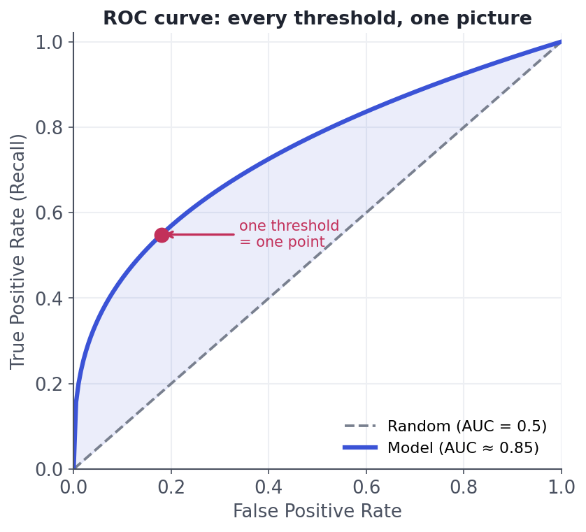

Picking the Right Metric
Why accuracy lies, and what to use instead.
"The model is 97% accurate" is one of the most dangerous sentences in data science — because on the problems that matter most (fraud, disease, churn), a model that does nothing can score 97% by ignoring the rare thing you actually care about. Choosing the right metric is how you make sure the number you're optimising reflects the decision you're making. Get this wrong and everything downstream — tuning, model choice, the go/no-go call — optimises the wrong thing.
Why 97% can be worthlessThe accuracy trap
If 3% of emails are spam, a model that labels everything "not spam" is 97% accurate — and catches zero spam. Accuracy rewards the majority class, so on imbalanced problems it hides total failure on the minority — which is usually the class you built the model for. To see past it, break predictions into the four outcomes of the confusion matrix:

Which error hurts more?Precision vs. recall — the fundamental tradeoff
The two numbers that matter more than accuracy:
- Precision = of everything you flagged positive, what fraction really was?
TP/(TP+FP). Cost of a false positive. - Recall (sensitivity) = of all the real positives, what fraction did you catch?
TP/(TP+FN). Cost of a false negative.
They trade off: flag more aggressively and recall rises but precision falls, and vice versa. Which matters more is a business question, not a math one: for cancer screening you want recall (missing a real case is catastrophic; a false alarm just means more tests). For spam or a "you're fired" auto-email, you want precision (a false positive is very costly). Always ask: which mistake is worse here?
When you need one number that balances both, use the F1 score — the harmonic mean of precision and recall: F1 = 2 · P · R / (P + R). The harmonic mean punishes imbalance, so F1 is only high when both are high (a model with 99% precision and 2% recall has a terrible F1, unlike a plain average).
Threshold-independentROC-AUC — grading every threshold at once
Precision and recall depend on where you set the threshold. The ROC curve sweeps every threshold and plots true-positive rate against false-positive rate; the AUC (area under it) summarises the model's ranking ability in one number — the probability it ranks a random positive above a random negative. 0.5 = coin flip, 1.0 = perfect:

On heavy class imbalance, ROC-AUC can look flatteringly high while the model is useless in practice, because a huge number of true negatives keeps the false-positive rate low. When positives are rare (fraud, rare disease), prefer the precision–recall curve / PR-AUC, which focuses on the positive class you care about and won't be lulled by an ocean of easy negatives.
MAE, RMSE, R²Regression metrics, briefly
For predicting numbers:
- MAE (mean absolute error) — average size of the miss, in the target's units; robust to outliers.
- RMSE (root mean squared error) — like MAE but squares errors first, so it punishes big misses much harder. Use it when large errors are especially bad.
- R² — share of variance explained (1 = perfect, 0 = no better than predicting the mean); good for "how much signal did I capture?" but unitless.
MAE vs RMSE is the same question in disguise: how much do you care about the occasional large error? A lot → RMSE; treat all errors proportionally → MAE. (Beware MAPE — percentage error blows up when actuals are near zero.)
Interactive labYour turn — compute F1 from predictions
From the y_true and y_pred arrays, compute the F1 score — count TP/FP/FN, form precision and recall, then F1 = 2·P·R/(P+R) — round to 2 decimals and assign to answer.
tp = ((y_pred==1)&(y_true==1)).sum(), similarly fp and fn; prec=tp/(tp+fp), rec=tp/(tp+fn); F1 = 2*prec*rec/(prec+rec).tp = int(((y_pred==1) & (y_true==1)).sum())
fp = int(((y_pred==1) & (y_true==0)).sum())
fn = int(((y_pred==0) & (y_true==1)).sum())
prec = tp/(tp+fp); rec = tp/(tp+fn)
answer = round(2*prec*rec/(prec+rec), 2)Here TP=3, FP=1, FN=1 → precision 0.75, recall 0.75, F1 0.75. Because F1 is the harmonic mean, it collapses toward whichever of precision/recall is weaker — so you can't hide a bad recall behind a great precision.
★ Key points to remember
- Accuracy misleads on imbalanced data — a do-nothing model can score high while missing every rare positive.
- Precision = correctness of positive predictions (false-positive cost); recall = coverage of real positives (false-negative cost). They trade off.
- Which error is worse is a business call: recall for cancer screening, precision for spam / high-stakes actions. F1 balances both (harmonic mean).
- ROC-AUC grades ranking across all thresholds (0.5 random, 1.0 perfect) — but use PR-AUC when positives are rare.
- Regression: MAE (robust), RMSE (punishes big misses), R² (variance explained) — choose by how much large errors hurt.
◆ Practice▸
Show solution & reasoning
Report RMSE when large errors are disproportionately bad, because squaring the errors before averaging makes RMSE grow fast with big misses — so it penalises and surfaces outlier errors. Example: predicting delivery time or structural load, where being off by 60 minutes / a large margin once is much worse than being off by 5 minutes twelve times — RMSE captures that, MAE would treat them the same total. Use MAE when every error should count in proportion to its size and you want robustness to a few weird outliers (e.g. a median-style 'typical miss' in dollars). They can even disagree on which model is better, so pick the one matching your cost of error before comparing models.
Show solution & reasoning
Plain terms: when the model says 'positive,' it's right 95% of the time (very few false alarms) — but it only finds 30% of the actual positives, missing 70% of them. It's cautious: it only flags cases it's very sure about. Acceptable scenario: a high-precision-first setting where acting on a positive is expensive or intrusive and missing some is tolerable — e.g. auto-suspending accounts for fraud (you must be sure before penalising a customer, and a human process catches the rest), or surfacing 'definitely relevant' results where a few great hits beat many mediocre ones. The tradeoff is deliberate: you bought precision by sacrificing recall.
◎ Deep dive: F-beta and business-weighted errors, and what AUC does (and doesn't) tell you▸
Why the harmonic mean for F1? A plain average of precision and recall would rate a model with 100% precision and 0% recall at 50% — flattering a useless model. The harmonic mean, 2PR/(P+R), is dominated by the smaller value, so it's only high when both are high, and collapses toward zero if either does. That matches what we want from a single balance score. When the two errors aren't equally costly, use F-beta: Fβ weights recall β times as much as precision (F2 favours recall, F0.5 favours precision), letting you bake the business's error costs into one tunable number.
AUC's exact meaning, and its blind spots. ROC-AUC equals the probability that the model scores a random positive higher than a random negative — a pure measure of ranking/separation, independent of any threshold or of calibration. That's its strength (compare models regardless of operating point) and its trap: a high AUC says the model ranks well, not that its probabilities are trustworthy (that's calibration, lesson 10.3) or that it's useful at your threshold. And under heavy imbalance the abundant true negatives keep FPR tiny, inflating AUC while precision is poor — which is why PR-AUC, focused on the positive class, is the honest choice for rare-event problems. Always pair a summary metric with the operating point you'll actually deploy.